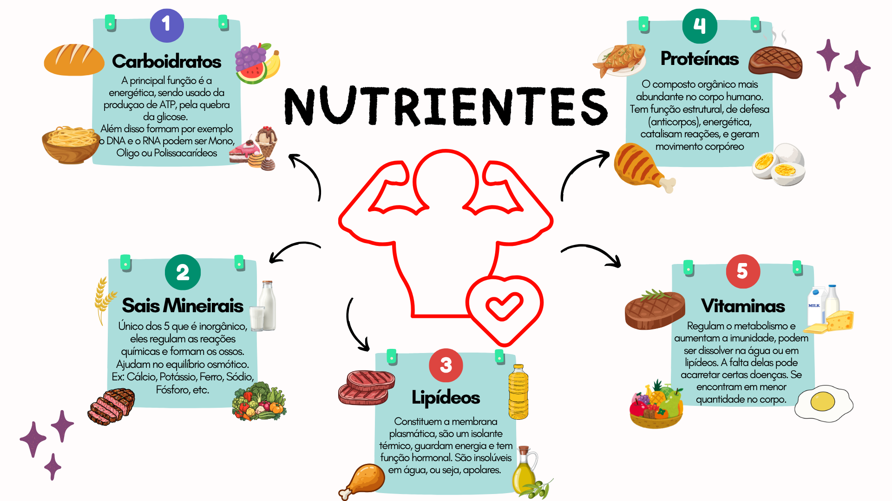
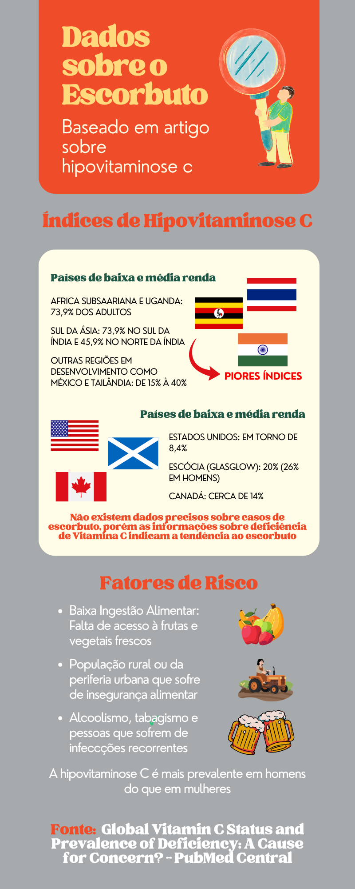

O Nutriente

Antes de tudo, vamos falar de forma geral sobre os nutrientes:
Carboidratos
São as moléculas mais fáceis de serem quebradas, por esse motivo elas são a principal fonte de energia instantânea do nosso corpo.
Existem monossacarídeos (RNA, DNA, Glicose), oligossacarídeos (Lactose, Maltose, Sacarose) e polissacarídeos (Amido, Celulose, Glicogênio), e as enzimas quebram os carboidratos até conseguirem transformar essa molécula em glicose, para assim produzir ATP por meio da fermentação láctica e respiração celular. Encontramos eles em pães, frutas, massas, doces, leite.
Sais Minerais
Dos 5 citados é o único nutriente inorgânico, que regula reações químicas, formam os ossos e equilibram a quantidade de líquido nas células, cada sal mineral tem uma função diferente.
Os principais sais são o cálcio, que consegue fortalecer os ossos, o ferro, que está presente na hemoglobina do corpo e se prender a um oxigênio, sendo essencial para a produção de ATP, e o sódio e potássio, que são essenciais para o funcionamento da bomba de sódio e potássio, um transporte ativo que possibilita o funcionamento do sistema nervoso, além de muitos outros.
Lipídeos
Apresentam cadeia longa de carbono, sendo apolares.
São os principais constituintes da membrana plasmática, por meio dos fosfolipídeos, são um elemento essencial no funcionamento da célula, já que ela faz o reconhecimento de elementos que saem e entram na célula.
Os triglicerídeos, são constituídos por lipídeos, com 1 glicerol e 3 ácidos graxos, sendo essenciais para estocar energia e proteger o corpo internamente.
Além disso, existem dois principais tipos de colesterol que surgem graças aos lipídeos, eles são: LDL: O colesterol “ruim”, que possui uma densidade baixa e fica preso nas artérias, comprometendo o fluxo sanguíneo. Encontramos ele em carnes. HDL: O colesterol “bom”, que consegue desobstruir as artérias, removendo o excesso de colesterol acumulado nas paredes das artérias e o levando de volta para o fígado. Encontramos ele em óleos.
Proteínas
Polímeros formados por aminoácidos. Elas possuem a função de restaurar os tecidos, gerar o movimento corpóreo por meio de filamentos de actina e miosina. Além disso, enzimas, que são proteínas, servem como catalisadores orgânicos.
As enzimas funcionam em um sistema bem específico chamado “chave-fechadura”, elas atuam como catalisadores que digerem um substrato. Um exemplo é a pepsina, que se localiza no estômago e digere proteínas. Depois dessa digestão, as enzimas continuam úteis, recebendo o próximo substrato para reiniciar o ciclo. Encontramos elas em carnes de origem animal e no ovo.
As proteínas também atuam na defesa do corpo, com os anticorpos, constituem nossas unhas e cabelo, e são a 3ª fonte de energia do corpo.
Vitaminas
As vitaminas se encontram em menor quantidade no corpo humano. Elas regulam o metabolismo e aumentam a imunidade.
Existem dois tipos de vitaminas: Hidrossolúveis: Vitaminas C e do complexo B, precisamos delas em maior quantidade, já que elas se solubilizam em água e perdemos essas vitaminas urinando. Lipossolúveis: Vitaminas D, E, K, A. Precisamos em menor quantidade, já que não perdemos elas em grandes quantidades, por se solubilizarem em gorduras.
Alimentos que fornecem mais vitaminas são principalmente o fígado, ovo e leite.
Vitamina C
Dentre as principais funções, a vitamina C (ou ácido ascórbico) ajuda a produzir o colágeno para a saúde da pele e dos tecidos, atua como antioxidante e previne do Escorbuto.
A vitamina C está muito presente nas frutas cítricas como laranja, limão e tangerina.
A Doença Relacionada
Escorbuto
O escorbuto é uma doença gerada pela falta de vitamina C.
Historicamente, ela esteve muito vinculada às grandes navegações, já que frutas cítricas estragavam nas desgastantes viagens e não havia fonte desse nutriente.
Sintomas: Hematomas, sangramento nas gengivas, fraqueza, fadiga e irritação na pele são os principais sintomas do escorbuto. Eles podem levar cerca de três meses para aparecer, mesmo com uma dieta deficiente em vitamina C.
Infográfico Sobre Falta de Vitaminca C na atualidade

Esse infográfico nos mostra que nas regiões mais pobres é onde há maior falta de vitamina C na população e com isso maior tendência a adquirir escorbuto.
Saiba mais sobre o artigoA Química por trás do nutriente
Molécula de Ácido Ascórbico
Com base no desenho da molécula, é possível notar três funções orgânicas.
Álcool: por causa das hidroxilas ligadas a carbonos saturados.
Éster: pela existência de uma carbolina ligada a um oxigênio.
Enol: hidroxila ligada a um carbono insaturado.
É uma vitamina hidrossolúvel pois possui quatro hidroxilas, e as hidroxilas deixam a molécula mais polar, assim formam pontes de hidrogênio com a água (H2O) e essas ligações aumentam a capacidade de dissolução da vitamina na água.
Referências Bibliográficas
-
DIAS, Diogo Lopes. Ácido ascórbico (Vitamina C). Disponível em:
- Cunha, B. C. S. [@professorsamuelcunha]. (s. d.-a). CARBOIDRATOS - bioquímica compostos orgânicos - Youtube. Recuperado 24 de agosto de 2026, de https://www.youtube.com/watch?v=P9EDS3LXhUc&list=PLj4yVuRqCKGHdbU29GiI-RQA5CL2go2Ga&index=4
- Cunha, B. C. S. [@professorsamuelcunha]. (s. d.-b). LIPÍDIOS - Bioquímica - Compostos Orgânicos - Aula | Biologia com Samuel Cunha. Youtube. Recuperado 24 de agosto de 2026, de https://www.youtube.com/watch?v=u0it7IzIGrc&list=PLj4yVuRqCKGHdbU29GiI-RQA5CL2go2Ga&index=5
- Cunha, B. C. S. [@professorsamuelcunha]. (s. d.-c). PROTEÍNAS - COMPOSTOS ORGÂNICOS - BIOQUÍMICA | Biologia com Samuel Cunha. Youtube. Recuperado 24 de agosto de 2026, de https://www.youtube.com/watch?v=ryW0698xdyY&list=PLj4yVuRqCKGHdbU29GiI-RQA5CL2go2Ga&index=3
- Cunha, B. C. S. [@professorsamuelcunha]. (s. d.-d). SAIS MINERAIS - COMPOSTOS INORGÂNICOS - BIOQUIMICA | biologia com Samuel Cunha. Youtube. Recuperado 24 de agosto de 2026, de https://www.youtube.com/watch?v=pkYGvXMhWDE&list=PLj4yVuRqCKGHdbU29GiI-RQA5CL2go2Ga&index=8
- Cunha, B. C. S. [@professorsamuelcunha]. (s. d.-e). VITAMINAS - COMPOSTOS ORGÂNICOS - BIOQUÍMICA | Biologia com Samuel Cunha. Youtube. Recuperado 24 de agosto de 2026, de https://www.youtube.com/watch?v=-0sPTGY0djw&list=PLj4yVuRqCKGHdbU29GiI-RQA5CL2go2Ga&index=2
- Escorbuto. (2025, janeiro 15). Einstein.br; Einstein Hospital Israelita. https://www.einstein.br/n/glossario-de-saude/escorbuto
- Texto do Livro de Química: “NUTRIENTES E SUAS FUNÇÕES: EQUILÍBRIO É FUNDAMENTAL QUANDO SE TRATA DE ALIMENTAÇÃO SAUDÁVEL” - páginas 75 – 78.